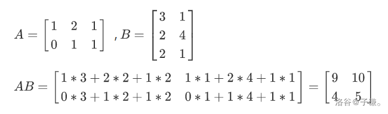

矩阵¶
数据存在矩阵第一行，乘法后还在第一行！
矩阵的相关定义¶
矩阵运算是线性代数中的一个重要概念，涉及到矩阵的加法、减法、数乘、乘法、转置、逆矩阵等基本操作。以下是一些基本的矩阵运算法则：
-
矩阵加法和减法：
-
两个相同大小的矩阵A和B相加，结果矩阵C的每个元素是A和B对应元素的和的矩阵。
-
两个相同大小的矩阵A和B相减，结果矩阵C的每个元素是A和B对应元素的差的矩阵。
-
-
矩阵数乘：
- 一个标量与一个矩阵相乘，结果矩阵的每个元素都是标量与矩阵对应元素的乘积。
-
矩阵乘法：
- 矩阵A乘以矩阵B，要求A的列数等于B的行数。结果矩阵C的每个元素是A的列向量与B的行向量的标量积的和。
-
矩阵转置：
- 矩阵A的转置矩阵记为A^T，是将A的行向量转换为列向量的矩阵。
-
逆矩阵：
- 如果矩阵A是可逆的，那么存在一个矩阵A-1，使得A乘以A-1等于A^-1乘以A等于单位矩阵I。
-
矩阵的幂：
- 矩阵A的幂是指A连乘自身多次，例如A^n，其中n是正整数。
-
分块矩阵：
- 分块矩阵是将矩阵分成若干个子矩阵，每个子矩阵保持原来的次序和位置。
-
列向量与矩阵的乘法：
- 列向量与矩阵相乘，结果是一个行向量，每个元素是列向量与矩阵对应列向量的标量积。
-
行向量与矩阵的乘法：
- 行向量与矩阵相乘，结果是一个列向量，每个元素是行向量与矩阵对应行向量的标量积。
-
矩阵的迹：
- 矩阵A的迹是指矩阵主对角线上的元素之和，记为tr(A)。
矩阵的加法与减法¶
矩阵的加法规则如下：
-
只有当两个矩阵的行数和列数相同时，它们才能进行加法。
-
相同位置的元素逐个相加。
-
结果仍然是一个矩阵，其行数和列数与原始矩阵相同。
-
加法满足交换律，即$A + B = B + A $。
-
存在一个零矩阵\(0\)，使得对于任何矩阵A，都有$A + 0 = A $。
减法类似。
矩阵乘法¶

图片是引用的
矩阵快速幂¶
应用¶
通常我们会遇到一些“大模拟”题，这里的大指的是要模拟的步数很多，但是每一步并不复杂。并且通常情况下，模拟的操作都是一个数组上的值的变化。
我们可以把矩阵看作是“过程”，并且其满足乘法的性质（即连续进行两次“过程”的变化就相当于将因此变化的矩阵平方后的矩阵）。那么我们就可以将通过矩阵快速幂来快手求出很多次操作之后的“变化”，然后对原始数组应用变化即可。
实现¶
原理
因为矩阵满足交换律和结合律(自行搜索),所以矩阵快速幂和快速幂一样，只不过快速幂中的数乘（res*=a，a*=a变成了两个矩阵相乘）
存矩阵
我们使用结构体存,这样在传参时方便许多
struct node {
int a[N][N];
node() {
memset(a,0,sizeof a); //一定要写！
}
}c;
在清空结构体时可以使用
memset(c.a,0,sizeof c.a);
或者再结构体中手动写入
node() {
memset(a,0,sizeof a); //一定要写！
}
这样可以在创建结构体时自动清空.
与快速幂的区别
在快速幂中,我们有一个初始值,即res=1
在ksm函数中,我们不断res=res*c%p;更新res,得到结果
在矩阵快速幂中,我们的操作对象是一个矩阵,所以我们需要这么一个初始矩阵.
其实就是
for(int i=1; i<=n; i++)res.a[i][i]=1;
即
n=5时
1 0 0 0 0
0 1 0 0 0
0 0 1 0 0
0 0 0 1 0
0 0 0 0 1
在快速幂中,我们的函数是
int ksm(int c,int k,int p) { //c^k %p
int res=1;
...
return res;
}
我们把c替换为需要被快速幂的矩阵,res初始化为初始矩阵,重载一下*运算符,就完工啦!(c,res请使用结构体类型)
或者写一个矩阵乘的函数(如代码2)
重定义运算符,顺便将取模放进去
struct node{
int a[N][N];
}node c;
node operator *(const node &x,const node &y){ //重载运算符
for(int k=1;k<=n;++k)
for(int i=1;i<=n;++i)
for(int j=1;j<=n;++j)
z.a[i][j]=(z.a[i][j]+x.a[i][k]*y.a[k][j]%mod)%mod;
return z;
}
代码:
#include<bits/stdc++.h>
using namespace std;
#define int long long
const int N=105,Mod=1e9+7;
int n,k;
struct node {
int a[N][N];
node(){
memset(a,0,sizeof a); //一定要写！
}
}c,res;
void ksm() {
while(k) {
if(k&1) {
node x;
for(int k=1; k<=n; k++)
for(int i=1; i<=n; i++) {
for(int j=1; j<=n; j++)x.a[i][j]=(x.a[i][j]+res.a[i][k]*c.a[k][j]%Mod)%Mod;
}
res=x;
}
{
node x;
for(int k=1; k<=n; k++)
for(int i=1; i<=n; i++) {
for(int j=1; j<=n; j++)x.a[i][j]=(x.a[i][j]+c.a[i][k]*c.a[k][j]%Mod)%Mod;
}
c=x;
}
k>>=1;
}
}
signed main() {
cin>>n>>k;
for(int i=1; i<=n; i++)for(int j=1; j<=n; j++) {
cin>>c.a[i][j];
}
for(int i=1; i<=n; i++)res.a[i][i]=1;
ksm();
for(int i=1; i<=n; i++) {
for(int j=1; j<=n; j++)cout<<res.a[i][j]<<' ';
cout<<'\n';
}
return 0;
}
写法2
#include<bits/stdc++.h>
using namespace std;
#define int long long
const int N=105,Mod=1e9+7;
int n,k;
struct node {
int a[N][N];
node() {
memset(a,0,sizeof a); //一定要写！
}
}c;
node f(node a,node b) { //矩阵乘矩阵,返回矩阵.这个只能暴力,没有其他办法
node x;
for(int k=1; k<=n; k++)
for(int i=1; i<=n; i++) {
for(int j=1; j<=n; j++)x.a[i][j]=(x.a[i][j]+a.a[i][k]*b.a[k][j]%Mod)%Mod;
}
return x;
}
node ksm() {
node res;
for(int i=1; i<=n; i++)res.a[i][i]=1;
while(k) {
if(k&1) {
res=f(res,c);
}
c=f(c,c);
k>>=1;
}
return res;
}
signed main() {
cin>>n>>k;
for(int i=1; i<=n; i++)for(int j=1; j<=n; j++) {
cin>>c.a[i][j];
}
node res=ksm();
for(int i=1; i<=n; i++) {
for(int j=1; j<=n; j++)cout<<res.a[i][j]<<' ';
cout<<'\n';
}
return 0;
}
例题 #1 矩阵加速（数列）¶
题目描述
已知一个数列 \(a\)，它满足：
\(a_x= \begin{cases} 1 & x \in\{1,2,3\}\\ a_{x-1}+a_{x-3} & x \geq 4 \end{cases}\)
求 \(a\) 数列的第 \(n\) 项对 \(10^9+7\) 取余的值。
- 对于 \(100\%\) 的数据 \(1 \leq T \leq 100\)，\(1 \leq n \leq 2 \times 10^9\)。
步骤
- 总结递推矩阵
这一步是最难的地方也是最不容易理解的地方。那么现在我们就来推导一下这个地方。
对于\(a_x=a_{x-1}+a_{x-3}\)
\([a_{x-3},a_{x-2},a_{x-1}]\times [?]=[a_{x-2},a_{x-1},a_{x}]\)
现在我们要求出[?]就万事大吉了。那么结合矩阵的定义，我们先设\([?]=\begin{bmatrix}a1 & b1& c1 \\a2 & b2&c2 \\a3&b3&c3\end{bmatrix}\)
那么\([a_{x-3},a_{x-2},a_{x-1}]\times \begin{bmatrix}a1 & b1& c1 \\a2 & b2&c2 \\a3&b3&c3\end{bmatrix}= [a_{x-2},a_{x-1},a_{x}]\)
记住口诀：行同A，列同B


所以
\(a_{x-2}=a_{x-3}a1+a_{x-2}a2+a_{x-1}a3\)
\(a_{x-1}=a_{x-3}b1+a_{x-2}b2+a_{x-1}b3\)
\(a_{x}=a_{x-3}c1+a_{x-2}c2+a_{x-1}c3\)
那么现在结合题目，就很容易推出\([?]\)是什么了。
\(a_{x-2}=a_{x-3}(a1=0)+a_{x-2}(a2=1)+a_{x-1}(a3=0)\)
\(a_{x-1}=a_{x-3}(b1=0)+a_{x-2}(b2=0)+a_{x-1}(b3=1)\)
\(a_{x}=a_{x-3}(c1=1)+a_{x-2}(c2=0)+a_{x-1}(c3=1)\)
所以！！\([?]=\begin{bmatrix}0 & 0& 1 \\1 & 0&0 \\0&1&1\end{bmatrix}\)
注意这里与数组中的下标对应为\([?]=\begin{bmatrix}3,3 & 2,3& 1,3 \\3,2 & 2,2&1,2 \\3,1&2,1&1,1\end{bmatrix}\)
为什么会这样呢？因为数组的第一维是行！所以我们应该写成
\(\begin{bmatrix}a_{x-3}\\a_{x-2}\\a_{x-1}\end{bmatrix}\times \begin{bmatrix}0 & 1& 0 \\1 & 0&0 \\1&0&1\end{bmatrix}=\begin{bmatrix}a_{x-2}\\a_{x-1}\\a_{x}\end{bmatrix}\)
这样就没问题了吧？嘿嘿。
-
应用矩阵结合律,将 \(S\times A\times A\times ...\) 转化为 \(S\times A^n\)
-
使用矩阵快速幂
-
在运行得到的最后矩阵中找到需要的值,(特判),输出
代码
#include<bits/stdc++.h>
using namespace std;
#define int long long
const int N=105,Mod=1e9+7;
int n,k;
struct node {
int a[5][5];
node() {
memset(a,0,sizeof a); //一定要写！
}
};
node f(node a,node b) {
node x;
for(int k=1; k<=3; k++)
for(int i=1; i<=3; i++) {
for(int j=1; j<=3; j++)x.a[i][j]=(x.a[i][j]+a.a[i][k]*b.a[k][j]%Mod)%Mod;
}
return x;
}
node ksm() {
node res,c;
for(int i=1; i<=3; i++)res.a[i][i]=1;
c.a[1][1]=c.a[1][3]=c.a[2][1]=c.a[3][2]=1;
while(k) {
if(k&1) {
res=f(res,c);
}
c=f(c,c);
k>>=1;
}
return res;
}
signed main() {
int T;
cin>>T;
while(T--) {
cin>>k;
if(k<=3){
cout<<1<<endl;
continue;
}
node res;
res=ksm();
cout<<res.a[2][1]<<endl;
}
return 0;
}
注意:
从矩阵快速幂模板copy时,记得修改矩阵大小n,总结出递推矩阵
如本题的递推矩阵为
c.a[1][1]=c.a[1][3]=c.a[2][1]=c.a[3][2]=1;其余为0;
例题 #2 斐波那契数列¶
题目描述
大家都知道，斐波那契数列是满足如下性质的一个数列：
\(F_n = \left\{\begin{aligned} 1 \space (n \le 2) \\ F_{n-1}+F_{n-2} \space (n\ge 3) \end{aligned}\right.\)
请你求出 \(F_n \bmod 10^9 + 7\) 的值。
输入格式
一行一个正整数 \(n\)
输出格式
输出一行一个整数表示答案。
【数据范围】 对于 \(60\%\) 的数据，\(1\le n \le 92\)； 对于 \(100\%\) 的数据，\(1\le n < 2^{63}\)。
思路
有了上面一道题的经历,这道题是不是步骤~一模一样~?
复制一份水一水字数捏~
- 总结递推矩阵
这一步是最难的地方也是最不容易理解的地方。那么现在我们就来推导一下这个地方。
对于\(a_x=a_{x-1}+a_{x-2}\)
\([a_{x-2},a_{x-1}]\times [?]=[a_{x-1},a_{x}]\)
现在我们要求出[?]就万事大吉了。那么结合矩阵的定义，我们先设\([?]=\begin{bmatrix}a1 & b1 \\a2 & b2\end{bmatrix}\)
那么\([a_{x-2},a_{x-1}]\times \begin{bmatrix}a1 & b1 \\a2 & b2\end{bmatrix}= [a_{x-1},a_{x}]\)
记住口诀：行同A，列同B

所以
\(a_{x-1}=a_{x-2}a1+a_{x-1}a2\)
\(a_{x}=a_{x-2}b1+a_{x-1}b2\)
那么现在结合题目，就很容易推出\([?]\)是什么了。
\(a_{x-1}=a_{x-2}(a1=0)+a_{x-1}(a2=1)\)
\(a_{x}=a_{x-2}(b1=1)+a_{x-1}(b2=1)\)
所以！！\([?]=\begin{bmatrix}0 & 1 \\1 & 1\end{bmatrix}\)
注意这里与数组中的下标对应为\([?]=\begin{bmatrix}3,3 & 2,3& 1,3 \\3,2 & 2,2&1,2 \\3,1&2,1&1,1\end{bmatrix}\)
为什么会这样呢？因为数组的第一维是行！所以我们应该写成
\(\begin{bmatrix}a_{x-2}\\a_{x-1}\end{bmatrix}\times \begin{bmatrix}1& 0 \\1 & 1\end{bmatrix}=\begin{bmatrix}a_{x-1}\\a_{x}\end{bmatrix}\)
这样就没问题了吧？嘿嘿。
代码
#include<bits/stdc++.h>
using namespace std;
#define int long long
const int N=105,MOD=1e9+7;
int n,k;
struct node {
int a[5][5];
node() {
memset(a,0,sizeof a); //一定要写！
}
};
node f(node a,node b) {
node x;
for(int k=1; k<=2; k++)
for(int i=1; i<=2; i++) {
for(int j=1; j<=2; j++)x.a[i][j]=(x.a[i][j]+a.a[i][k]*b.a[k][j]%MOD)%MOD;
}
return x;
}
node ksm() {
node res,c;
for(int i=1; i<=2; i++)res.a[i][i]=1;
c.a[1][1]=c.a[1][2]=c.a[2][1]=1;
while(k) {
if(k&1) {
res=f(res,c);
}
c=f(c,c);
k>>=1;
}
return res;
}
signed main() {
cin>>k;
if(k<=2){
cout<<1<<endl;
return 0;
}
node res;
res=ksm();
cout<<res.a[2][1]<<endl;
return 0;
}
例题 #3 矩阵加速模拟 石头游戏¶
石头游戏在一个 \(n\) 行 \(m\) 列的网格上进行，每个格子对应一种操作序列，操作序列至多有 \(10\) 种，分别用 \(0 \sim 9\) 这 \(10\) 个数字指明。
操作序列是一个长度不超过 \(6\) 且循环执行、每秒执行一个字符的字符串。
每秒钟，所有格子同时执行各自操作序列里的下一个字符。
序列中的每个字符是以下格式之一：
-
数字 \(0 \sim 9\)：表示拿 \(0 \sim 9\) 个石头到该格子。
-
NWSE：表示把这个格子内所有的石头推到相邻的格子，N表示上方，W表示左方，S表示下方，E表示右方。 -
D：表示拿走这个格子的所有石头。
给定每种操作序列对应的字符串，以及网格中每个格子对应的操作序列，求石头游戏进行了 \(t\) 秒之后，石头最多的格子里有多少个石头。
在游戏开始时，网格是空的。
输入格式
第一行 \(4\) 个整数 \(n, m, t, act\)。
接下来 \(n\) 行，每行 \(m\) 个字符，表示每个格子对应的操作序列。
最后 \(act\) 行，每行一个字符串，表示从 \(0\) 开始的每个操作序列。
输出格式
一个整数：游戏进行了 \(t\) 秒之后，所有方格中石头最多的格子有多少个石头。
对于所有的测试数据， 满足 \(1 \le m,n \le 8\)，\(1 \le t \le 10^8\)，\(1 \le act \le 10\)。
同样是使用矩阵来加速模拟过程的题目。
注意到我们的矩阵之所以是二维的，是表示从要给位置向另外一个位置的注意，所以他们在的矩阵事实上我们应该把它重新编号为一维，要不然我们就在做立方体乘法了。
那么我们定义id(x,y)为(x,y)的重编号，我们怎么样来用矩阵表示出操作过程呢？
-
拿石子操作：
[0][id(i, j)]赋值为石子数量，[id(i, j)][id(i, j)]=1。 -
NESW操作：[sw(i, j)][id(移动终位置)]=1。比如N为[id(i, j)][id(i - 1, j)]。 -
D操作：无需赋值，因为矩阵默认值为零。
#include<bits/stdc++.h>
using namespace std;
#define ell dbg('\n')
const char el='\n';
const bool enable_dbg = 1;
template <typename T,typename... Args>
void dbg(T s,Args... args) {
if constexpr (enable_dbg){
cerr << s;
if(1)cerr<<' ';
if constexpr (sizeof...(Args))
dbg(args...);
}
}
#define zerol = 1
#ifdef zerol
#define cdbg(x...) do { cerr << #x << " -> "; err(x); } while (0)
void err() { cerr << endl; }
template<template<typename...> class T, typename t, typename... A>
void err(T<t> a, A... x) { for (auto v: a) cerr << v << ' '; err(x...); }
template<typename T, typename... A>
void err(T a, A... x) { cerr << a << ' '; err(x...); }
#else
#define dbg(...)
#endif
#define int long long
int n,m,t,act;
int a[30][30];
string s[30];//字符串
int get(int x,int y){
return (x-1)*m+y;
}
void mulself(int a[110][110],int b[110][110]){//矩阵乘矩阵
int c[110][110]={{0}};
for(int i=0;i<=n*m;i++)
for(int j=0;j<=n*m;j++)
for(int k=0;k<=n*m;k++)
c[i][j]+=a[i][k]*b[k][j];
memcpy(a,c,sizeof c);
}
void mul(int f[110],int a[110][110]){
int c[110]={0};
for(int j=0;j<=n*m;j++)
for(int k=0;k<=n*m;k++)
c[j]+=f[k]*a[k][j];
memcpy(f,c,sizeof c);
}
int mat[110][110][110],q[110][110];//60个状态矩阵与60个状态矩阵的乘积（打包计算的）
int f[110];//二维网格压缩的一维矩阵
signed main() {
cin>>n>>m>>t>>act;
for(int i=1;i<=n;i++)
for(int j=1;j<=m;j++)
scanf("%1d",&a[i][j]),a[i][j]++;
for(int i=1;i<=act;i++){//复制字符串到 60 个
cin>>s[i];
string t=s[i];
while(s[i].size()!=60) s[i]+=t;
s[i]=" "+s[i];
}
for(int k=1;k<=60;k++){//建立60个状态矩阵
for(int i=1;i<=n;i++)
for(int j=1;j<=m;j++){
int x=a[i][j];
if(isdigit(s[x][k])){
mat[k][0][get(i,j)]=s[x][k]-'0';
mat[k][get(i,j)][get(i,j)]=1;
}
else if(s[x][k]=='N' && i>1/*边界问题*/) mat[k][get(i,j)][get(i-1,j)]=1;
else if(s[x][k]=='W' && j>1) mat[k][get(i,j)][get(i,j-1)]=1;
else if(s[x][k]=='S' && i<n) mat[k][get(i,j)][get(i+1,j)]=1;
else if(s[x][k]=='E' && j<m) mat[k][get(i,j)][get(i,j+1)]=1;
}
mat[k][0][0]=1; //赋值为 1 保证 f[0]=1
}
memcpy(q,mat[1],sizeof mat[1]);
for(int k=2;k<=60;k++) mulself(q,mat[k]);//计算需要矩阵快速幂的矩阵
for(int i=0;i<=n;i++){
for(int j=0;j<=m;j++)dbg(q[i][j]);ell;
}
f[0]=1;//压缩成一维数组，且 f[0]=1
int u=t/60;
while(u){//矩阵快速幂
if(u & 1) mul(f,q);
mulself(q,q);
u>>=1;
}
// for(int i=1;i<=m*n;i++)cdbg(f[i]);
u=t%60;
for(int i=1;i<=u;i++){ mul(f,mat[i]);//计算剩余部分
// for(int j=1;j<=m*n;j++)cdbg(f[i]);
}
int ans=0;
for(int i=1;i<=n*m;i++) ans=max(ans,f[i]);//计算
cout<<ans;
return 0;
}
例题 #4 矩阵加速Floyd [SDOI2009] HH去散步¶
在这之前可以写矩阵加速floyd模板题
题目描述
HH 有个一成不变的习惯，喜欢饭后百步走。所谓百步走，就是散步，就是在一定的时间内，走过一定的距离。但是同时 HH 又是个喜欢变化的人，所以他不会立刻沿着刚刚走来的路走回。又因为 HH 是个喜欢变化的人，所以他每天走过的路径都不完全一样，他想知道他究竟有多少种散步的方法。
现在给你学校的地图（假设每条路的长度都是一样的都是 \(1\)），问长度为 \(t\)，从给定地点 \(A\) 走到给定地点 \(B\) 共有多少条符合条件的路径。
输入格式
第一行：五个整数 \(N,M,t,A,B\)。其中 \(N\) 表示学校里的路口的个数，\(M\) 表示学校里的路的条数，\(t\) 表示 HH 想要散步的距离，\(A\) 表示散步的出发点，而 \(B\) 则表示散步的终点。
接下来 \(M\) 行，每行一组 \(A_i,B_i\)，表示从路口 \(A_i\) 到路口 \(B_i\) 有一条路。数据保证 \(A_i \neq B_i\)，但不保证任意两个路口之间至多只有一条路相连接。路口编号从 \(0\) 到 \(N-1\)。同一行内所有数据均由一个空格隔开，行首行尾没有多余空格。没有多余空行。答案模 \(45989\)。
对于 \(100\%\) 的数据，\(N \le 50\)，\(M \le 60\)，\(t \le 2^{30}\)，\(0 \le A,B\)。
首先考虑普通的写法怎么写。定义\(f_{i,j}\)为走i步，到达点j的方案数量。
但是有一个问题，就是我们不能立刻沿着刚刚走来的路走回，以我们貌似还需要记录来的边。
那么既然我们都知道来的边了，我们很显然就可以知道当前在那个点了。所以就是
\(f_{i,j}\)表示走i步，走到边j的终点的方案数量。
如果是普通的dp，那么我们直接枚举边i，对i终点的的邻边进行更新即可。
那么我们怎么样去放在矩阵快速幂上进行优化呢？
首先矩阵快速幂优化的条件是我们要将方程写成\(f_{i,\dots}=\text{op}f_{i-1,\dots}\)的形式。恰好这里就是。
那么我们考虑矩阵的乘法运算。\(res_{i,j}\)由a的第i行和j的第j列逐项相乘后相加得到。因此我们枚举两条边a,b，如果a,b不是同一条，且a,b首尾相连，那么我们就可以走到有一个转移是\(f_{i,b}=f_{i-1,a}\text{op}\dots\)。这里的op自然是加法了，也正好对应矩阵乘法中相加的运算。
因此对于这种a,b，我们就有初始矩阵中的\(f_{a,b}=1\)。
然后我们的矩阵快速幂需要3个东西，f,base,t ,代表的运算是\(base\times f^t\)。那么这里的t就是输入的t，base是？
base就是单位矩阵了，即对角线是1，其余是0的矩阵。当然我们也可以直接将f作为base，但是t要-1.
#include<bits/stdc++.h>
using namespace std;
#define int long long
const double eps=1e-6;
const int MOD=45989;
const int N=1e3+5;
#define rd read()
int read(){
int x;
cin>>x;
return x;
}
#define cdbg(x) cerr<<x<<endl;
string s;
int tot;
struct math{
int a[122][122];
math operator *(const math b)const{
math r;
memset(r.a,0,sizeof r.a); //注意清零
for(int k=1;k<=tot;k++){
for(int i=1;i<=tot;i++){
for(int j=1;j<=tot;j++){
r.a[i][j]+=a[i][k]*b.a[k][j];
r.a[i][j]%=MOD;
}
}
}
return r;
}
}a;
int n;
int t;
math ksm(math a,int b){
math res;
memset(res.a,0,sizeof res.a);
for(int i=1;i<=tot;i++)res.a[i][i]=1;
math base=a;
while(b){
if(b&1)res=res*base;
b>>=1;
base=base*base;
}
return res;
}
int x[N];
int y[N];
signed main(){
n=rd;
int m=rd;
t=rd;
int A=rd+1,B=rd+1;
x[++tot]=0;
y[tot]=A;
for(int i=1;i<=m;i++){
int a=rd+1,b=rd+1;
x[++tot]=a;
y[tot]=b;
x[++tot]=b;
y[tot]=a;
}
for(int i=1;i<=tot;i++){
for(int j=1;j<=tot;j++){
if(i==j||i==(j^1))continue;
if(y[i]==x[j])a.a[i][j]=1;//两条边可以接上
}
}
math ans=ksm(a,t);
int res=0;
for(int i=1;i<=tot;i++){
(res+=(y[i]==B)*ans.a[1][i])%=MOD;
}
cout<<res<<endl;
}
题单¶
矩阵求逆¶
矩阵求逆是线性代数中的一个概念，指的是对于一个给定的方阵（即行数和列数相等的矩阵），寻找另一个方阵，使得这两个方阵相乘的结果是单位矩阵。 具体来说，假设有一个 \(n \times n\) 的方阵 \(A\)，如果存在另一个 \(n \times n\) 的方阵 \(B\)，使得 \(A \times B = B \times A = I\)，其中 \(I\) 是 \(n \times n\) 的单位矩阵（单位矩阵的主对角线上的元素都是1，其余元素都是0），那么矩阵 \(B\) 就被称为矩阵 \(A\) 的逆矩阵，记作 \(A^{-1}\)。 不是所有的方阵都有逆矩阵。一个方阵 \(A\) 存在逆矩阵的充分必要条件是它的行列式（determinant）不为零，即 \(\text{det}(A) \neq 0\)。如果行列式为零，则矩阵 \(A\) 是奇异的，它没有逆矩阵。 矩阵求逆的方法有很多，以下是一些常见的方法：
-
高斯-约当消元法：通过行变换将矩阵 \(A\) 转换成单位矩阵，同时对单位矩阵进行相同的行变换，最终得到的矩阵就是 \(A\) 的逆矩阵。
-
伴随矩阵法：首先计算 \(A\) 的伴随矩阵（adjugate matrix），然后利用公式 \(A^{-1} = \frac{1}{\text{det}(A)} \text{adj}(A)\) 来计算 \(A\) 的逆矩阵。
-
直接公式法：对于2x2或3x3的矩阵，可以直接使用特定的公式来计算逆矩阵。 矩阵求逆在多个领域都有应用，比如在解决线性方程组、在物理学中的变换、在计算机图形学中的坐标变换等。它是线性代数中的一个重要概念，也是许多数学和工程问题的基础。
矩阵乘法解决实际问题¶
在图论中¶
设现在有一个邻接矩阵\(A\)。
那么\(A^k\)的意义是什么？（两个点之间若有边则\(A[u][v]=1\)）
从\(floyd\)算法的角度考虑，不难发现\(A^k\)的第\(i\)行第\(j\)列的数字含义是从\(i\)到\(j\)经过\(k\)步的路径方案总数。
[TJOI2017] 可乐（数据加强版）
加里敦星球的人们特别喜欢喝可乐。因而，他们的敌对星球研发出了一个可乐机器人，并且放在了加里敦星球的 \(1\) 号城市上。这个可乐机器人有三种行为： 停在原地，去下一个相邻的城市，自爆。它每一秒都会随机触发一种行为。现在给加里敦星球城市图，在第 \(0\) 秒时可乐机器人在 \(1\) 号城市，问经过了 \(t\) 秒，可乐机器人的行为方案数是多少？
输出可乐机器人的行为方案数，答案可能很大，请输出对 \(2017\) 取模后的结果。
对于 \(100\%\) 的数据， \(n,m\leq 100\) ， $ t\leq 10^9$ .
这道题我们可以从**邻接矩阵**的**幂**的意义考虑。
设现在有一个邻接矩阵\(A\)。
那么\(A^k\)的意义是什么？（两个点之间若有边则\(A[u][v]=1\)）
从\(floyd\)算法的角度考虑，不难发现\(A^k\)的第\(i\)行第\(j\)列的数字含义是从\(i\)到\(j\)经过\(k\)步的路径方案总数。
从这个角度考虑，这个点就有了一种做法。
首先将这个图的邻接矩阵建出来，然后直接算这个矩阵的\(k\)次方。
最后统计\(\sum\limits_{i=1}^{n}A[1][i]\)就是答案。
停留
在原地停留很简单，我们只要认为每个点都有一个从自己到自己的自环即可。
自爆
我们可以将自爆这个**状态**也看成一个**城市**，就设它为编号\(0\)。
我们在邻接矩阵上从每个点都向这个点连一条边，这个点除了自己外不连其他出边。
这样就满足了任何一个点随时可以自爆，且无法恢复到其他状态。
最后，统计答案。\(Ans=\sum\limits_{i=0}^{n}A[1][i]\)
/*
CB Ntsc
*/
#include <bits/stdc++.h>
using namespace std;
#define int long long
#define mp make_pair
#define rd read()
inline int read() {
int xx = 0, ff = 1;
char ch = getchar();
while (ch < '0' || ch > '9') {
if (ch == '-')
ff = -1;
ch = getchar();
}
while (ch >= '0' && ch <= '9') xx = xx * 10 + (ch - '0'), ch = getchar();
return xx * ff;
}
inline void write(int out) {
if (out < 0)
putchar('-'), out = -out;
if (out > 9)
write(out / 10);
putchar(out % 10 + '0');
}
const int N = 100 + 5;
const int M = 40;
const int INF = 1e16 + 5;
const int MOD = 2010 + 7;
int t,m,n;
struct node {
int a[N][N];
node() {
memset(a,0,sizeof a); //一定要写！
}
}c;
void add(int u,int v){
c.a[u][v]=c.a[v][u]=1;
}
node f(node a,node b) {
node x;
for(int k=0; k<=n; k++)
for(int i=0; i<=n; i++) {
for(int j=0; j<=n; j++)x.a[i][j]=(x.a[i][j]+a.a[i][k]*b.a[k][j]%MOD)%MOD;
}
return x;
}
node ksm(node c,int k) {
node res;
for(int i=0; i<=n; i++)res.a[i][i]=1;
while(k) {
if(k&1) {
res=f(res,c);
}
c=f(c,c);
k>>=1;
}
return res;
}
int ans;
signed main(){
n=rd;m=rd;
for(int i=1;i<=m;i++){
int u=rd,v=rd;
add(u,v);
}
t=rd;
for(int i=0;i<=n;i++){
c.a[i][i]=1;//建立自环，即不动的情况
}
for(int i=1;i<=n;i++)c.a[i][0]=1;//建立单向边到0节点表示自爆
node res=ksm(c,t);//快速幂求矩阵乘法
for(int i=0;i<=n;i++){
(ans+=res.a[1][i])%=MOD;//统计答案
}
write(ans),putchar('\n');//输出答案
return 0;
}
/*
1
2 5 1
0 0 1
0 0 4
*/
在递推与变换中 | 矩阵的结合律应用¶
P5550 Chino的数列
没有背景，我写不出来了qwq
Chino可可爱爱涅！
题目描述
Chino给定了\(n\)个数\(a_1...a_n\)，给定常数\(s,m\)，她会轮流对这\(n\)个数做\(k\)组操作，每组操作包含以下两步：
\(1.swap(a_s,a_m)\)(交换\(a_s\),\(a_m\))
\(2.\)将\(n\)个数都向前平移一位(第\(1\)个移动到第\(n\)个位置上)
Chino想知道，\(k\)组操作后，这\(n\)个数分别是多少？
对于\(100\%\)的数据，\(1 \leq n \leq 80\)，\(1 \leq s < m\leq n\)，\(1 \leq k \leq 10^{18}\)
所有数字均在\(long~ long\)以内
我们要构建矩阵来快速转移。
那么我们怎么样构建矩阵呢？对于操作一，我们可以构建矩阵\(a_{i,i}=1\)，但是\(a_{s,m}=a_{m,s}=1,a_{s,s}=a_{m,m}=0\)，然后矩阵快速幂转移就行了。
对于操作2，我们也可以构建矩阵\(b_{i,i+1}=1\),对于\(i=n,b_{n,1}=1\)然后矩阵快速幂转移。
那么我们分开的情况可以处理了，我们怎么样把这两个操作一起转移呢？很简单，矩阵是满足结合律的，所以我们让快速幂中转移的\(base=a\times b\)就可以啦！
#include<bits/stdc++.h>
using namespace std;
#define int long long
const int N=105,MOD=1e9+7;
int n,k,s,m;
struct node {
int a[88][88];
node() {
memset(a,0,sizeof a); //一定要写！
}
}a,b,c;
node f(node a,node b) {
node x;
for(int k=1; k<=n; k++)
for(int i=1; i<=n; i++) {
for(int j=1; j<=n; j++)x.a[k][i]=(x.a[k][i]+a.a[j][i]*b.a[k][j]%MOD)%MOD;
}
return x;
}
node ksm(node base) {
node res,c=base;
for(int i=1; i<=n; i++)res.a[i][i]=1;
while(k) {
if(k&1) {
res=f(res,c);
}
c=f(c,c);
k>>=1;
}
return res;
}
signed main() {
cin>>n>>s>>m>>k;
for(int i=1;i<=n;i++)cin>>c.a[i][1];
for(int i=1;i<=n;i++)if(i!=s&&i!=m)a.a[i][i]=1;
a.a[s][m]=1;a.a[m][s]=1;
for(int i=1;i<=n-1;i++)b.a[i][i+1]=1;
b.a[n][1]=1;
node base=f(a,b);
node res;
res=ksm(base);
c=f(c,res);
for(int i=1;i<=n;i++)cout<<c.a[i][1]<<' ';
return 0;
}
在递推与变换中 | 广义矩阵乘法应用¶
[GZOI2017] 河神
给出数列 \(\{a_n\}\) 和 \(\{b_n\}\) 以及 \(\{A_n\}\) 的递推关系, 试求出数列 \(\{A_n\}\) 第 \(N\) 项.
递推关系为:
\(A_n=\begin{cases}a_n & 0 \le n < K \\ \bigoplus (A_{n-K+t} \otimes b_t) & n \ge K \end{cases}\)
其中，\(\otimes\) 表示与操作，\(\oplus\) 表示或操作。
现在我们要解决的问题就是 \([a_1,a_2,\dots,a_{K-1}]→[\dots,A_n]\)的问题，忽略0≤n<K的情况，这个只不过是表示数组的初始值。
考虑用矩阵快速幂来解决，此处我们更改矩阵乘法的定义：将原本的乘法改为按位与，原本的加法改为按位或。那么因为是位运算，所以在快速幂中的基[a_{i,i}=1]就应该变成\([a_{i,i}=\text{Bbase}=(111\dots111)_2]\)
\(\begin{bmatrix} a_{n-1} & a_{n-2} &\dots &a_{n-k}\end{bmatrix} \times \begin{bmatrix} b_1 &\text{Bbase} &0 & \dots & 0 \\ b_{2} & 0 & \text{Bbase} & \dots & 0 \\b_3 & 0 & 0 & \dots & 0 \\ \dots & \dots & \dots & \dots & \dots \\ b_{k-1} & 0 & 0 & \dots & \text{Bbase}\\ b_k & 0 & 0 & \dots & 0\end{bmatrix}=\begin{bmatrix} a_n & a_{n-1} &\dots &a_{n-k+1}\end{bmatrix}\)
#include<bits/stdc++.h>
using namespace std;
#define ull unsigned long long
#define inf 0xffffffffffffffffull
const int N=205;
int n,K,s,m;
struct node {
ull a[N][N];
node() {
memset(a,0,sizeof a); //一定要写！
}
}c;
node f(node a,node b) {
node x;
for(int i=1; i<=K; i++)
for(int j=1; j<=K; j++)
for(int k=1; k<=K; k++)
x.a[i][j]|=a.a[i][k]&b.a[k][j];
return x;
}
node ksm(node base,int k) {
node res,c=base;
for(int i=1; i<=K; i++)res.a[i][i]=inf;
while(k) {
if(k&1) {
res=f(res,c);
}
c=f(c,c);
k>>=1;
}
return res;
}
ull a[N],b[N];
ull ans;
signed main() {
cin>>n>>K;
for(int i=1;i<=K;i++)cin>>a[i];
for(int i=1;i<=K;i++)cin>>b[i];
if(n<=K){cout<<a[n]<<endl;return 0;}
for(int i=1;i<=K;i++)c.a[i][1]=b[K-i+1];
for(int i=1;i<=K;i++)c.a[i][i+1]=inf;
c=ksm(c,n-K+1);
for(int i=1;i<=K;i++){
ans|=a[K-i+1]&c.a[i][1];
}
cout<<ans<<endl;
return 0;
}
特别注意¶
在“斐波那契数列”中我们推导出来的矩阵和存储在数组中的矩阵存在映射关系。这种关系不是一定的！而是根据你写的矩阵乘法（即重定义*）的写法相关！
在Chino的数列这一题的代码中，我就使用了不同的矩阵乘法，并且这种方法貌似更优秀，因为其恰好让我们推导出来的矩阵和存储在数组中的矩阵一一对应。请理解和对比不同乘法的写法的本质和区别！
以下的矩阵转移方法更加常用，对于网络平台等。
node f(node a,node b) {
node x;
for(int i=1; i<=n; i++)
for(int j=1; j<=n; j++)
for(int k=1; k<=n; k++)
x.a[i][j]=(x.a[i][j]+a.a[i][k]*b.a[k][j]%MOD)%MOD;
return x;
}
矩阵乘法常用变式¶
基础矩阵乘法：\(c=a\times b→c_{i,j}=\sum\limits_k a_{i,k}b_{k,j}\)
变式\(c=a\times b→c_{i,j}=\min\limits_k (a_{i,k}+b_{k,j})\)
\(c=a\times b→c_{i,j}=\min\limits_k a_{i,k}b_{k,j}\)
\(c=a\times b→c_{i,j}=\sum\limits_k a_{i,k}+b_{k,j}\)
等等。